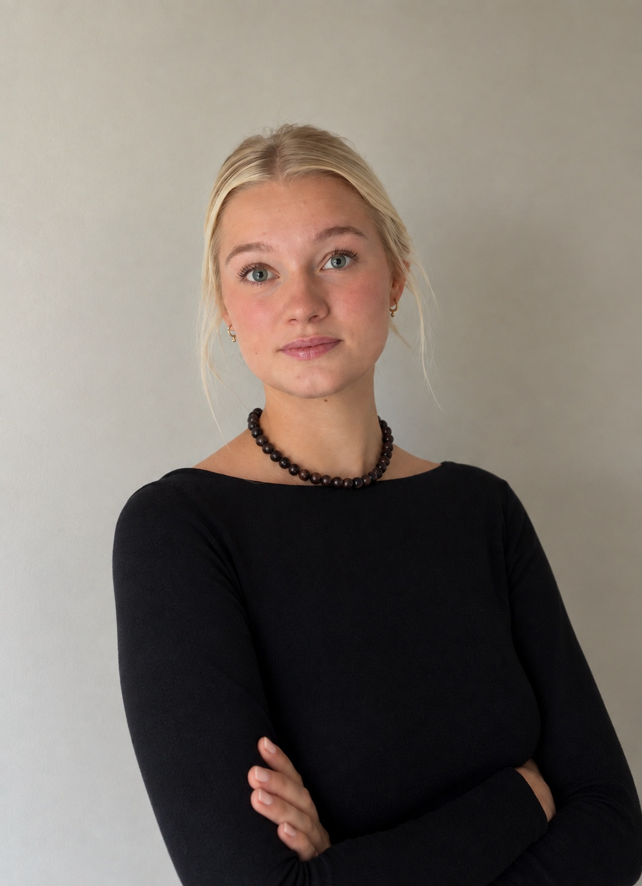
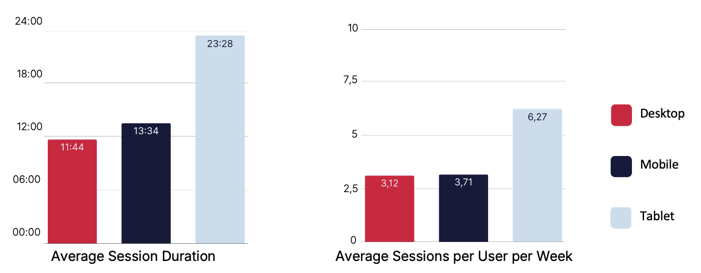
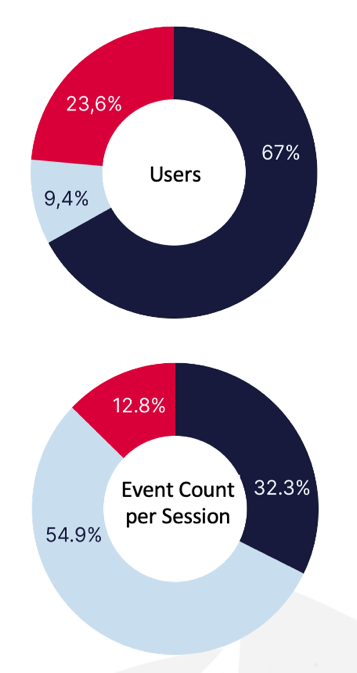
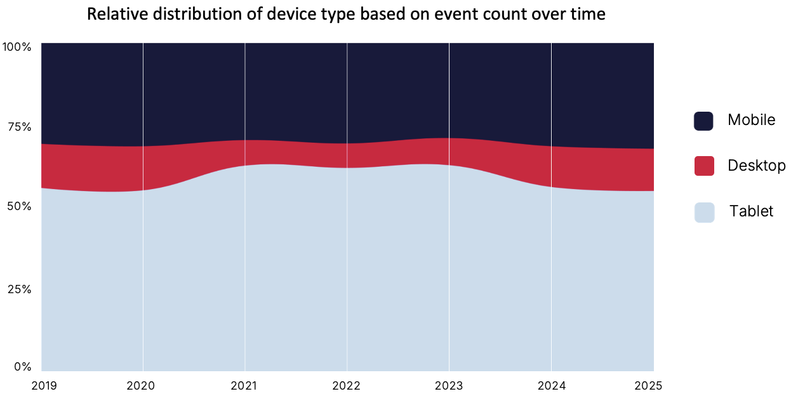
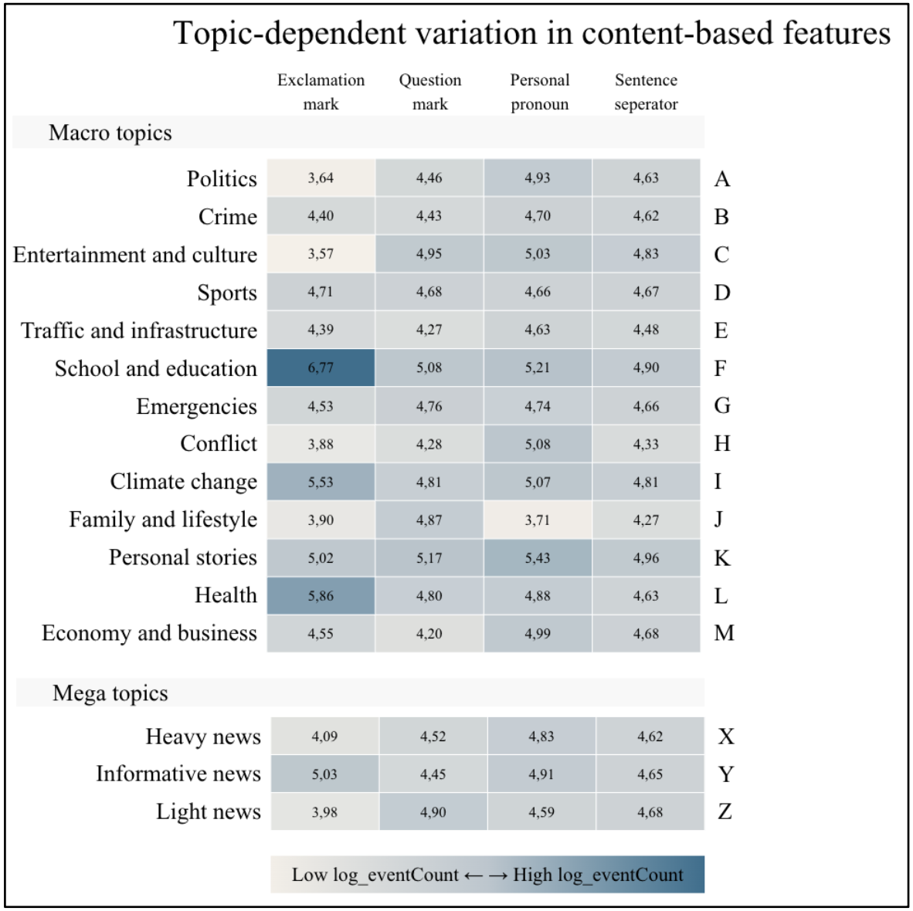
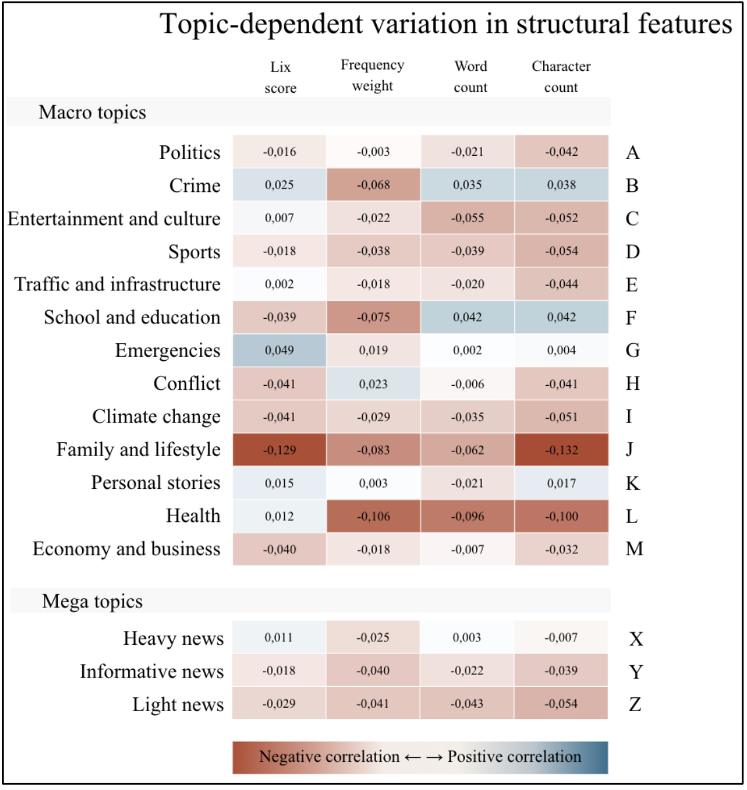
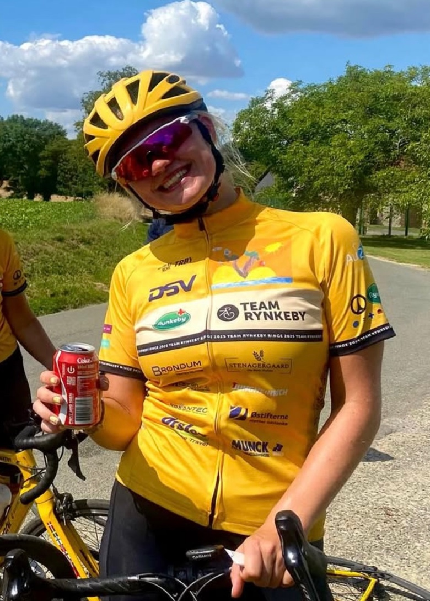

01
Shuang L. Frost
Professor · Aarhus Universitet
PORTFOLIO & CV
Cand.it · Informations Studies
I work at the intersection of data, technology, and business, with an interest in structuring information, analysing patterns, and turning data into actionable insights.

DATA · IT · Business
I am a newly graduated MSc in Information Studies from Aarhus University. My profile lies between the technical and business-oriented sides: I enjoy diving into data and systems, while also understanding the context in which they operate.
Through my studies and BI internship, I have worked with data extraction, structuring, analysis, and visualization. I am particularly motivated by challenges where raw data needs to be transformed into an overview or insight that others can act on.
I thrive both when working independently on complex problems and when collaborating with others. I am therefore looking for roles where I can combine analysis and technology with close interaction with the business.
AARHUS UNIVERSITY
A combination of information studies, technology, data and business economics.
The master's degree combined technical, analytical and organisational perspectives to IT
A project on an internal digitalisation programme at the Danish Court Administration, focusing on stakeholders, UX, and the interplay between organisation, users, and technology.
BI · DATA · USER BEHAVIOUR
My 30 ECTS internship at Vitec Visiolink in 2025 gave me hands-on experience working across the entire process from data to visualisation.
There was a need to consolidate data across customers and create a broader overview of user behaviour and engagement.
Along with my nearest coworkers we worked out a plan for relevant data and considerations regarding method and customer needs. I then worked with data extraction and transformation, analysed user behaviour, and developed visualisations. I used SQL and Python for data processing, as well as GA4, Google Cloud/BigQuery, and Looker Studio throughout the process.
The work was compiled into an aggregated report and published to our customers. The report made it possible to compare patterns across the data and investigate which factors were associated with engagement.

Example from the aggregated report · Looker Studio

QUANTITATIVE ANALYSIS · NLP
My master thesis explored the problem statement: How is the clickability of Danish digital news headlines influenced by the interaction between measurable headline features and topic-based contextual factors?
22.690 danish news article headlines · october 2025Exploratory quantitative analysis of data from Vitec Visiolink’s e-paper apps. The data was processed using tools including Python and BERTopic, and headline features were compared with article clicks. The focus was on relative patterns rather than absolute click counts.
I examined word and character count, LIX, word frequency, and structural features such as numbers, question marks, and exclamation marks. I then analysed how these relationships varied across different topics.
The headline features examined did not show consistent relationships across all topics. Instead, the results suggest that the significance of linguistic and structural features varies depending on the subject matter and the context in which the headline appears.


TEAM RYNKEBY · Aarhus University
Through Team Rynkeby Ringe, I have worked with fundraising, communication, coordination, and community-building in support of the Danish Childhood Cancer Foundation and the Danish Lung Foundation. In connection with the cycling trip to Paris, I have helped create activities and raise awareness around the fundraising efforts.
At Aarhus University, I have also been a tutor and mentor. In these roles, I contributed to creating a welcoming, social, and academically supportive study environment and helped new students settle into their programme.

RECOMMENDATIONS
Professor · Aarhus Universitet
Business Intelligence Specialist · Vitec Visiolink
Team Captain · Team Rynkeby Ringe
If my profile is relevant to a position, project, or an informal conversation about data, IT, and business, I would be happy to hear from you.